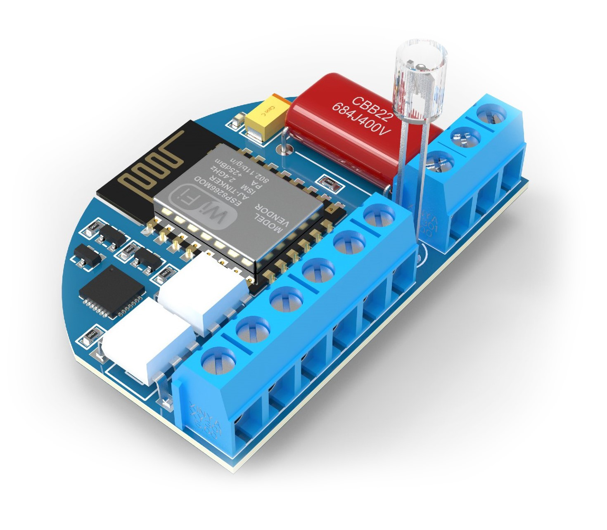
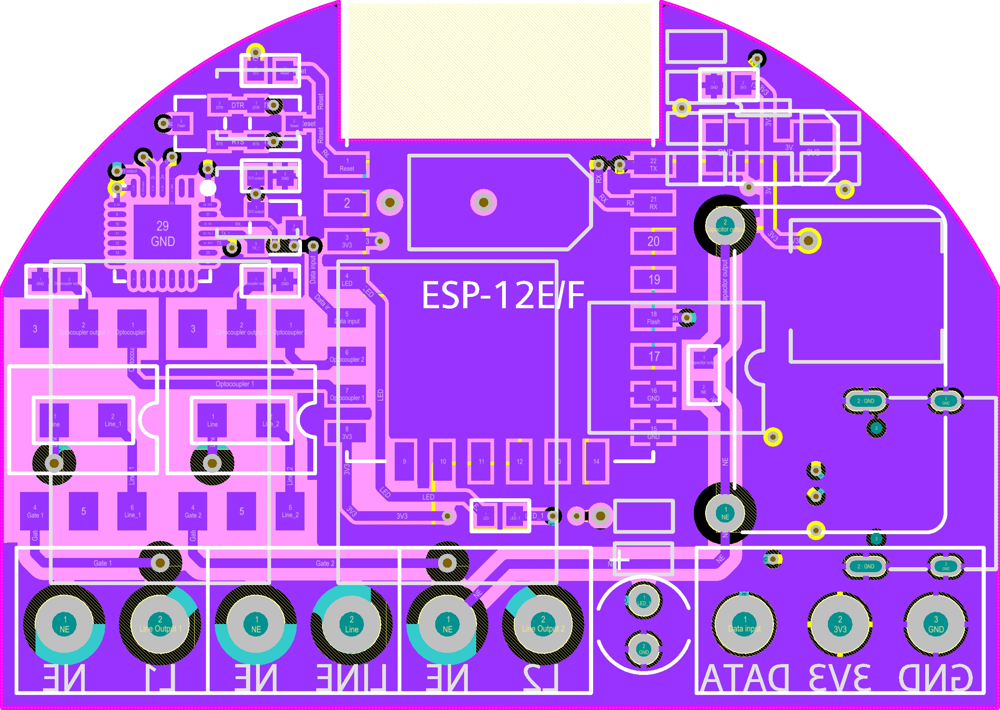

ABOUT
Born and raised in Minsk, Belarus. 21 years old. From an early age was interested in electronics and the structure of things. Junior front-end developer with a year of experience. Also engaged in the development, manufacture and programming of electronic devices. Interested in further development in the field of electronics and programming
SKILLS
HTML, CSS, SCSS, JS, Node.JS, Git, Figma, Responsive Design & Mobile-First Websites,
C++, C#, Lua, MySQL, Altium Designer, SolidWorks, KeyShot,
Development & Production Of Multylayer PCBs
EXAMPLES
Momentum Calculator WebDev  EXPERIENCE
No Experience
EDUCATION
-
Institute
Belarusian State University of Informatics and Radioelectronics
Expected Graduation:
2021
-
College
BUSIR affiliate “Minsk Radioengineering College”
Graduation:
2018
Thesis title:
Microprocessor-controlled audio power amplifier repair and adjustment guid
Thesis supervisor:
Docent Boris Danilenko
LANGUAGES
English, Русский, Беларуская
English level – A2+ (tested by EPAM Training Center / 05.2020)